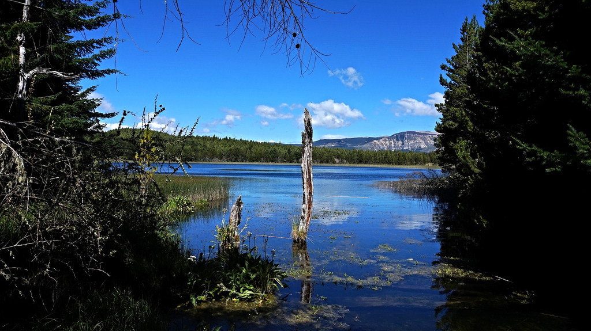

Reserva Nacional Coyhaique
Está ubicada al noreste de Coyhaique, en la Región de Aysén del General Carlos Ibáñez del Campo. Entre sus atractivos figuran las lagunas Verde, Venus, Los Sapos y Los Mallines. En la reserva encontrarás lenga, coigüe común, ñirre, ciruelillo, chilco, calafate y michay. También es posible observar fauna como pumas, cóndores, chucaos, tordos, cachañas, cernícalos, carpinteros negros, zorros colorados,visones y coipos, entre otros.